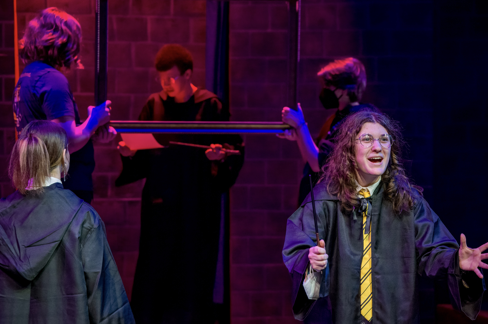
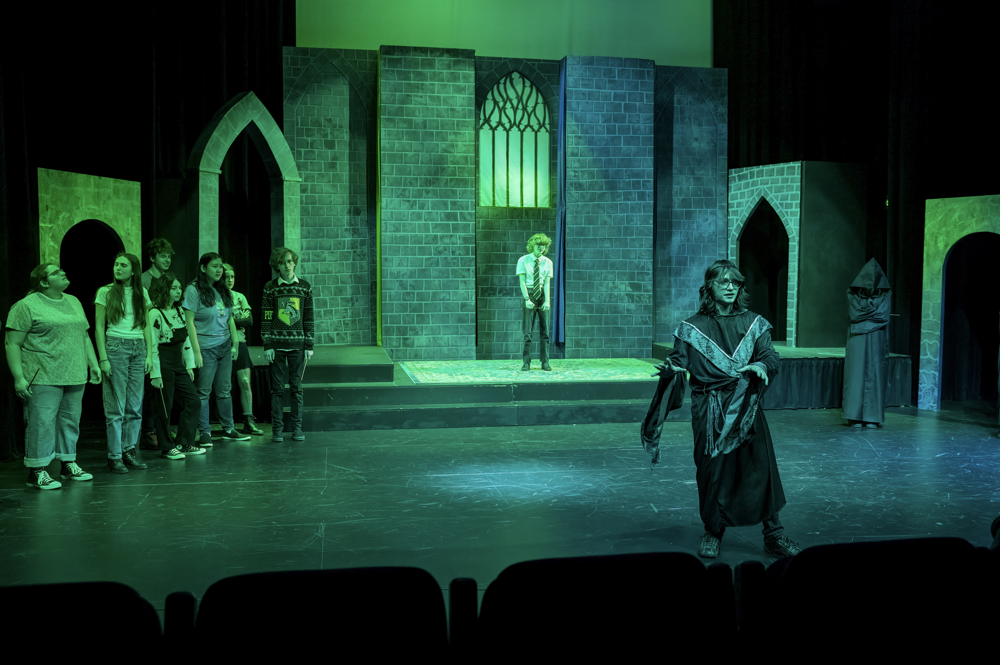

Puffs
|  |
 |
|  |
 |
"Puffs" is a comedic play that satirizes and parodies the Harry Potter series, showcasing the events of the seven books from the perspective of the Hufflepuffs. The story follows Wayne Hopkins, a boy who enters "A certain School of Magic and Magic" but is sorted into the Puffs house - the house for the "less significant" students - and his attempts to become a hero in his own way.
She Kills Monsters
She Kills Monsters" is a comedic play that follows the story of Agnes, a young woman who discovers her late sister's Dungeons and Dragons notebook and embarks on a journey to understand her sister's life and love for the game. Through the game, Agnes meets characters who help her come to terms with her sister's death and learn to embrace her own identity.
James and the Giant Peach
James and the Giant Peach is a musical that follows James, an orphaned boy, who befriends a group of anthropomorphic insects. Together, they go on a magical adventure inside a giant peach, encountering challenges and making new friends along the way.